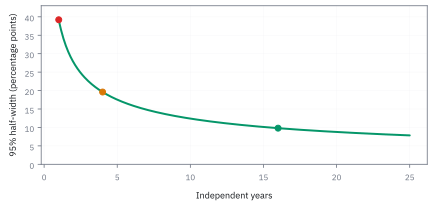

14.4 Put–Call Parity and the Volatility Smile
call ลบ put ที่ strike เดียวกันต้องเท่ากับ forward ที่คิดลดแล้วโดยไม่ต้องใช้แบบจำลอง แต่ความผันผวนที่ทำให้สูตรตรงกับราคาตลาดกลับไม่เท่ากันในแต่ละ strike
SPX อยู่ที่ 5,000 จุด option ยุโรปอายุ 6 เดือน strike 5,000 มี call ราคากลาง 300 จุด และ put 235 จุด ดอกเบี้ย 4% ต่อปี ดัชนีจ่ายปันผล 1.5% ต่อปี สัญญาละ \$100 ต่อจุด เพื่อนบอกว่า “strike เท่าราคาวันนี้ call กับ put ต้องราคาเท่ากัน ส่วนต่าง 65 จุด หรือ \$6,500 ต่อคู่ คือเงินฟรี” ถูกไหม?
ลองตอบก่อนเปิดเฉลย
ไม่ถูก call ลบ put ต้องเท่ากับมูลค่าวันนี้ของ “ได้ดัชนี จ่าย strike” ในวันหมดอายุ คือ $5{,}000e^{-0.015(0.5)}-5{,}000e^{-0.04(0.5)}=4{,}962.64-4{,}900.99=61.65$ จุด ไม่ใช่ศูนย์ ส่วนเกินจริงมีแค่ 3.35 จุด หรือ \$335 ต่อคู่ ก่อนหักส่วนต่างราคาซื้อขายของสี่ขา และทั้งก้อนนี้เท่ากับการกู้เงินแพงกว่า 4% เพียง 13.7 bp เท่านั้น เกือบแน่นอนว่าไม่ใช่เงินฟรี
สิ่งที่เราจะสร้าง
14.2 ได้ $C-P=S_0-Ke^{-rT}$ จากสูตร Black–Scholes แต่ความสัมพันธ์นี้ไม่ต้องใช้แบบจำลองเลย หน้านี้พิสูจน์มันใหม่จาก payoff อย่างเดียว ใส่ปันผลเข้าไป ใช้ตรวจราคาบนจอ สร้างรายการที่ล็อกส่วนต่าง แล้วดูว่าต้นทุนจริงกินมันหมดอย่างไร
ครึ่งหลังเดินย้อนสูตรของ 14.2: ใส่ราคาตลาดแล้วแก้หาความผันผวน ได้ implied volatility parity บังคับให้ call กับ put ที่ strike เดียวกันมีค่าเดียวกัน แต่ไม่ได้บังคับข้าม strike เมื่อวาดทุก strike จึงได้เส้นโค้งที่เรียกว่า smile แล้วเราจะอ่านโอกาสที่ตลาดคิดไว้ออกจากราคาชุดนั้นโดยตรง
ศัพท์ที่ใช้ในหัวข้อนี้
- Put–call parity
- สมการที่ผูก call, put, ดัชนี และเงินฝาก ที่ strike และวันหมดอายุเดียวกัน จริงเพราะสองฝั่งจ่ายเงินเท่ากันทุกกรณีในวันหมดอายุ จึงใช้ตรวจราคาได้โดยไม่ต้องเชื่อแบบจำลองใด
- Prepaid forward
- จ่ายเงินวันนี้เพื่อรับดัชนีหนึ่งหน่วยในวันหมดอายุ ถ้าดัชนีจ่ายปันผล ต้นทุนคือ $S_0e^{-qT}$ ถูกกว่าราคาวันนี้ เพราะซื้อน้อยกว่าหนึ่งหน่วยแล้วเอาปันผลซื้อเพิ่มจนครบ
- Conversion และ reversal
- conversion คือขาย call ซื้อ put และซื้อดัชนีพร้อมกัน ใช้เมื่อ call ลบ put แพงเกิน reversal คือทิศตรงข้าม ต้องสั่งทุกขาพร้อมกัน จึงมีชื่อเรียกทั้งชุด
- Implied volatility
- ค่าความผันผวนที่ใส่ในสูตร Black–Scholes แล้วได้ราคาตลาดพอดี ใช้แปลงราคาของทุก strike และทุกอายุให้อยู่บนสเกลเดียว มันเป็นราคาในหน่วยความผันผวน ไม่ใช่การพยากรณ์
- Smile และ skew
- รูปของ implied volatility เทียบ strike ที่วันหมดอายุเดียวกัน ถ้า Black–Scholes ถูกทุกข้อเส้นนี้ต้องแบน smile หมายถึงปีกสูงกว่ากลาง skew หมายถึงเอียง ดัชนีหุ้นเอียงชัด: put ที่ strike ต่ำแพงกว่า
- Put spread และ butterfly
- put spread คือซื้อ put strike หนึ่ง ขายอีก strike หนึ่ง ราคามันบอกโอกาสที่ดัชนีจบต่ำกว่าช่วงนั้น butterfly คือสาม strike ห่างเท่ากัน ราคามันบอก density ใช้อ่านสิ่งที่ตลาดคิดไว้โดยไม่ต้องใช้แบบจำลอง
สัญลักษณ์และหน่วย
| สัญลักษณ์ | ความหมาย | หน่วย |
|---|---|---|
| $S_0,\ S_T$ | ระดับดัชนีวันนี้ และวันหมดอายุ | จุด |
| $K,\ T$ | strike และอายุ ต้องตรงกันทั้ง call และ put | จุด, ปี |
| $r,\ q$ | ดอกเบี้ยต่อเนื่อง และ dividend yield ต่อเนื่อง | ต่อปี |
| $A,\ B$ | prepaid forward $S_0e^{-qT}$ และเงินฝาก $Ke^{-rT}$ | จุด |
| $F$ | forward $S_0e^{(r-q)T}$ | จุด |
| $C,\ P,\ \varepsilon$ | ราคา call, put และส่วนที่ผิด parity | จุด |
| $m$ | ตัวคูณสัญญา | USD ต่อจุด |
| $\sigma_{\rm imp}$ | implied volatility | ต่อรากที่สองของปี |
| $\mathbb Q,\ f^{\mathbb Q}$ | น้ำหนักตั้งราคาของ 14.2 และ density ของ $S_T$ ภายใต้มัน | ไม่มีหน่วย, ต่อจุด |
ขั้นที่ 1 — ลองด้วยมือ: call ลบ put จ่ายเท่าไรในวันหมดอายุ
โจทย์ให้อะไรมาบ้าง: ถือ call strike 5,000 หนึ่งใบ และขาย put strike 5,000 หนึ่งใบ อายุเดียวกัน ไล่ดูว่าวันหมดอายุได้เท่าไร ถ้าดัชนีจบที่ 5,600 และที่ 4,400
คำตอบ: ทั้งสองกรณีได้ $S_T-K$ พอดี เหตุผลทั่วไปมีสองกรณีเท่านั้น: ถ้าจบเหนือ strike, call จ่ายส่วนต่างและ put ไม่จ่าย ถ้าจบต่ำกว่า, call ไม่จ่ายและ put ที่ขายไว้ทำให้เราต้องจ่ายส่วนต่าง ซึ่งคือ $S_T-K$ ที่ติดลบ call ลบ put จึงคือ “ได้ดัชนี จ่าย strike” ทุกปลายทาง
ตรวจเองใน 10 วินาที: เราไม่ได้ใช้เลยว่าดัชนีเดินแบบไหน หรือมีความผันผวนเท่าไร ข้อสรุปนี้จึงจริงแม้ Black–Scholes จะผิด ตรงกลางที่ $S_T=5{,}000$ ทั้งสองใบเป็นศูนย์และ $S_T-K=0$ ก็ตรงอีก
Figure 14.4a — call ลบ put คือ payoff ของ forward

ขั้นที่ 2 — จาก payoff ที่เท่ากัน สู่ราคาวันนี้ที่เท่ากัน
ถ้าสองพอร์ตจ่ายเท่ากันทุกกรณี ราคาวันนี้ต้องเท่ากัน ไม่อย่างนั้นซื้อตัวถูกขายตัวแพงแล้วเก็บส่วนต่างได้ฟรี ขั้นที่ 1 บอกว่า call ลบ put จ่าย $S_T-K$ จึงต้องสร้าง “ได้ดัชนี” กับ “จ่าย strike” จากของที่ซื้อขายได้ แล้วตั้งราคาให้เท่ากัน
ลูกศรอ่านว่า “จ่ายเป็น … ในวันหมดอายุ” $A$ คือเงินที่ต้องใช้วันนี้เพื่อให้มีดัชนีหนึ่งหน่วยในวันหมดอายุ: ซื้อ $e^{-qT}$ หน่วย แล้วเอาปันผลที่ไหลเข้ามาซื้อเพิ่ม จำนวนหน่วยโตในอัตรา $q$ จนครบหนึ่งพอดี ส่วน $B$ คือเงินฝากที่โตเป็น $K$ พอดี ถือ $A$ และกู้ $B$ จึงได้ $S_T-K$ เหมือน call ลบ put
บรรทัดสุดท้ายใช้ $A=e^{-rT}F$ ซึ่งเป็นรูปที่โต๊ะใช้จริง: call ลบ put คือระยะที่ forward อยู่เหนือ strike คิดลดมาวันนี้ เมื่อ $K=F$ พอดี call กับ put ราคาเท่ากัน ไม่ใช่เมื่อ $K=S_0$ แบบที่เพื่อนในโจทย์เปิดเรื่องคิด
ขั้นที่ 3 — ตรวจราคาบนจอ SPX
โจทย์ให้อะไรมาบ้าง: $S_0=5{,}000$, $K=5{,}000$, $T=0.5$, $r=0.04$, $q=0.015$, call 300 จุด และ put 235 จุด (ราคากลาง) ตัวคูณ $m=\$100$ ต่อจุด
คำตอบ: call ลบ put บนจอแพงกว่าที่ parity บังคับ 3.3531 จุด หรือ \$335.31 ต่อคู่สัญญา ไม่ใช่ 65 จุด ส่วนใหญ่ของ 65 จุดคือ 61.65 จุดที่ต้องมีอยู่แล้ว เพราะ forward 5,062.89 อยู่เหนือ strike เมื่อดอกเบี้ยสูงกว่าปันผล
ตรวจเองใน 10 วินาที: ดอกเบี้ยลบปันผลคือ 2.5% ต่อปี ครึ่งปีได้ราว 1.25% ของ 5,000 คือ 62.5 จุด ใกล้ 61.65 (ส่วนต่างเล็กมาจากการคิดลด) ถ้าลืมปันผลจะได้ $5{,}000-4{,}900.99=99.01$ จุด แล้วเห็นว่า call ลบ put ถูกไป 34 จุด ซึ่งผิดทิศทางเลย
ขั้นที่ 4 — รายการที่ล็อกส่วนต่าง: conversion
ฝั่งที่แพงคือ call ลบ put จึงขาย call ซื้อ put ฝั่งที่ถูกคือ $A-B$ จึงซื้อ prepaid forward และกู้ $B$ บรรทัดแรกเป็นการเลือกรายการ ไม่ใช่ผลพิสูจน์ ส่วนบรรทัดถัดไปตรวจว่าเงินเข้าวันนี้เท่าไร และวันหมดอายุเหลือความเสี่ยงหรือไม่
เงินสดวันนี้บวก 3.3531 จุด และบรรทัดสุดท้ายเป็นศูนย์ทุก $S_T$ ตามขั้นที่ 1 (ขา call กับ put ให้ $-(S_T-K)$ ขา prepaid ให้ $S_T$ ขาเงินกู้ให้ $-K$) ไม่ว่าดัชนีจะไปไหน ทุกขาหักกันหมด ส่วนที่ได้วันแรกจึงถูกล็อกไว้
นี่คือความต่างระหว่าง arbitrage กับการเทรดที่ดี arbitrage ไม่ได้ต้องเดาอะไรถูก กำไรมีตั้งแต่วินาทีแรก แต่มีเงื่อนไขว่าทุกขาต้องซื้อขายได้จริงที่ราคาที่ใช้คำนวณ ซึ่งขั้นถัดไปจะตรวจ
Figure 14.4b — เงินสดวันแรกของ conversion มาจากสี่ขา

ขั้นที่ 5 — ก่อนเรียกว่าเงินฟรี: ราคาที่ซื้อขายได้จริง และต้นทุนการกู้
โจทย์ให้อะไรมาบ้าง: สมมติราคาซื้อขายได้จริงคือ call bid 299 (ราคาที่ขายได้) และ put ask 236 (ราคาที่ซื้อได้) ห่างราคากลางข้างละ 1 จุด และสมมติว่าเรากู้เงินได้แพงกว่า 4% ถามว่าส่วนต่างเหลือเท่าไร และดอกเบี้ยเงินกู้ต้องสูงแค่ไหนส่วนต่าง 3.3531 จุดจึงหายหมด
คำตอบ: ข้ามราคากลางข้างละ 1 จุด ส่วนต่างเหลือ 1.35 จุด ยังไม่รวมต้นทุนของขาดัชนี ทั้งก้อน 3.35 จุดเท่ากับการกู้แพงกว่า 4% เพียง 13.7 bp ถ้าเรากู้ได้ที่ 4.25% ส่วนต่างที่ทำได้จริงกลายเป็นขาดทุน 4.77 จุด โต๊ะจึงอ่านตัวเลขนี้กลับด้าน: ราคา option บอกว่าตลาดใช้ดอกเบี้ย 4.1369% ในการตั้งราคา ไม่ใช่มีเงินฟรีวางอยู่
ตรวจเองใน 10 วินาที: ดอกเบี้ย 13.7 bp บนเงิน 4,900 จุดนานครึ่งปีคือราว $4{,}900(0.00137)(0.5)\approx3.36$ จุด เท่ากับส่วนต่างพอดี
ขั้นที่ 6 — parity ไม่สนความผันผวน
ในสูตรของ 14.2 ความผันผวนอยู่แค่ใน $d_1$ และ $d_2$ เมื่อลบ put ออกจาก call พื้นที่สองฝั่งของระฆังรวมกันได้ 1 ความผันผวนจึงหายไปทั้งหมด ขั้นนี้ทำซ้ำพีชคณิตแบบมีปันผล แล้วลองตัวเลขสามค่า
ความผันผวนจาก 10% เป็น 40% ทำให้ call แพงขึ้นกว่าสามเท่า แต่ผลต่างไม่ขยับเลย ความหมายคือ parity บอกได้แค่ว่า call กับ put ห่างกันเท่าไร บอกไม่ได้ว่าแต่ละตัวควรราคาเท่าไร ระดับราคาเป็นเรื่องของความผันผวน ซึ่งเป็นสิ่งเดียวที่ตลาดต้องต่อรองกัน
Figure 14.4c — call กับ put ขยับตามความผันผวน ผลต่างคงที่

ขั้นที่ 7 — เดินย้อนสูตร: implied volatility
ราคาตลาดมีอยู่แล้ว สิ่งที่ไม่รู้คือความผันผวน เราจึงแก้สมการ $C_{\rm BS}(\sigma)=C_{\rm market}$ หา $\sigma$ ราคา call เพิ่มขึ้นตาม $\sigma$ เสมอ (vega เป็นบวกตาม 14.3) คำตอบจึงมีค่าเดียว วิธีที่เร็วคือ Newton: ใช้ vega เป็นความชันแล้วเดินไปหาจุดตัด เริ่มที่ 20%
บรรทัดแรกคือเส้นสัมผัสที่ $\sigma_n$ ตัดแกนที่ไหน ก้าวเดียวจาก 20% ก็พลาดแค่ 0.0006 จุด เพราะราคา ATM เกือบเป็นเส้นตรงในความผันผวน (Figure 14.2d) ก้าวที่สองได้ 19.282099% ตรงทุกหลัก put 235 จุดแก้แบบเดียวกันได้ 19.0395% ต่ำกว่าของ call 0.2426 จุด ทั้งที่เป็น strike และอายุเดียวกัน
ขั้นที่ 8 — parity บังคับให้ call กับ put มี implied volatility เท่ากัน
ถ้าราคาตลาดเป็นไปตาม parity ด้วย $r$ และ $q$ ที่ใช้ในสูตร call และ put ที่ strike เดียวกันต้องให้ implied volatility ค่าเดียว ขั้นนี้พิสูจน์ แล้วใช้มันแปลงส่วนต่างของขั้นที่ 3 เป็นหน่วยความผันผวน
บรรทัดที่สองใช้ parity ของราคาตลาด และ parity ของสูตรที่ $\sigma_p$ (ขั้นที่ 6) บรรทัดที่สามได้จากการเทียบสองบรรทัดแรก และเพราะ $C_{\rm BS}$ เพิ่มขึ้นตาม $\sigma$ อย่างเคร่งครัด สองค่าที่ให้ราคาเท่ากันจึงต้องเป็นค่าเดียวกัน
บรรทัดสุดท้ายบอกว่าช่องว่าง 0.2426 จุดความผันผวนคือส่วนต่าง 3.353 จุดของขั้นที่ 3 ในอีกหน่วยหนึ่ง ถ้าใส่ดอกเบี้ย 4.1369% ของขั้นที่ 5 ลงในสูตร ทั้งสองจะได้ 19.1582% เท่ากัน โต๊ะจึงใช้กฎว่า call กับ put ต้องมี implied volatility เท่ากัน เป็นตัวตรวจว่าใส่ดอกเบี้ยกับปันผลถูกหรือไม่
ขั้นที่ 9 — วาดทุก strike: ความผันผวนไม่เท่ากัน
โจทย์ให้อะไรมาบ้าง: option อายุ 3 เดือนบนดัชนีที่อยู่ที่ 1,000 จุด ดอกเบี้ย 2% ไม่มีปันผล implied volatility ของห้า strike เป็นรูปร่างที่พบบ่อยในตลาดดัชนี (สมมติ ไม่ใช่ราคาของวันใดวันหนึ่ง): 800 → 28.5%, 900 → 23.1%, 1,000 → 19.8%, 1,100 → 18.2%, 1,200 → 18.9% ถามว่า put strike 800 แพงกว่าราคาที่ใช้ความผันผวนเดียว 19.8% กี่เท่า
คำตอบ: put strike 800 ราคา 2.9424 จุด แพงกว่าราคาแบบความผันผวนเดียว 9.2 เท่า ปีกซ้ายสูงกว่าจุดต่ำสุดที่ 1,100 ถึง 10.3 จุด ถ้า Black–Scholes ถูกทุกข้อ ห้าจุดนี้ต้องอยู่บนเส้นเดียวกัน การที่มันไม่อยู่คือหลักฐานว่าตลาดไม่เชื่อว่า log ราคาเป็น Normal หางบาง
ตรวจเองใน 10 วินาที: parity ของขั้นที่ 8 ไม่ขัดกับรูปนี้ เพราะมันผูกเฉพาะ call กับ put ที่ strike เดียวกัน call strike 800 จึงต้องใช้ 28.5% เหมือน put strike 800 ส่วนข้าม strike ไม่มีอะไรบังคับให้เท่ากัน
Figure 14.4d — smile ของ option ดัชนีอายุ 3 เดือน

ขั้นที่ 10 — ราคาข้าม strike บอกโอกาสที่ตลาดคิดไว้
smile ไม่ได้เป็นแค่รูป ราคาที่เรียงตาม strike บอก distribution ของ $S_T$ ภายใต้ $\mathbb Q$ ได้ตรง ๆ เขียนราคา call เป็น integral ตาม 14.2 แล้วถามว่า ถ้าขยับ strike นิดหนึ่ง ราคาเปลี่ยนเท่าไร $K$ โผล่สองที่ คือขอบล่างและในตัวถูก integral จึงใช้กฎของ Leibniz
พจน์จากขอบเป็นศูนย์ เพราะตัวถูก integral $(s-K)$ เป็นศูนย์ที่ $s=K$ พอดี เหลืออนุพันธ์ของ $s-K$ เทียบ $K$ คือ −1 ความชันของราคา call ตาม strike จึงคือโอกาสจบเหนือ strike ติดเครื่องหมายลบ บรรทัดของ put ได้จากการหาอนุพันธ์ของ parity $C-P=A-Ke^{-rT}$ เทียบ $K$
บรรทัดสุดท้ายได้ density ทั้งตัวจากราคาที่ซื้อขายได้ โดยไม่ต้องสมมติแบบจำลองใดเลย ในตลาดจริงมี strike ห่างกันเป็นช่วง อนุพันธ์จึงกลายเป็นผลต่าง: put spread แทนอนุพันธ์ครั้งแรก และ butterfly แทนครั้งที่สอง
ขั้นที่ 11 — อ่านโอกาสดัชนีร่วงจาก put spread
โจทย์ให้อะไรมาบ้าง: ราคา put จาก smile ของขั้นที่ 9: $P_{800}=2.9424$ และ $P_{900}=9.8942$ ถ้าใช้ค่าแบน 19.8% จะเป็น 0.3189 และ 6.2383 ขั้นที่ 10 บอกว่า put spread หารด้วยระยะ strike คูณ $e^{rT}$ คือค่าเฉลี่ยของ $\mathbb Q(S_T\lt k)$ บนช่วง $800\le k\le900$
คำตอบ: ราคาตลาดให้โอกาสจบต่ำกว่าระดับในช่วง 800–900 เฉลี่ย 6.99% เทียบ 5.95% ในโลกความผันผวนเดียว ตลาดจึงให้น้ำหนักกับการร่วงเกิน 10–20% มากกว่าแบบจำลอง แต่ตัวเลข 6.30% ที่ได้จากการใส่ 28.5% ลงใน $\Phi(-d_2)$ ตรง ๆ ไม่ใช่โอกาสของตลาดที่ 800 เพราะมันคือโลกที่ความผันผวน 28.5% ทุก strike ซึ่งตลาดไม่ได้คิด
ตัวเลขที่ถูกต้องที่ strike 800 ต้องนับว่าราคา put ขึ้นกับ $K$ สองทาง: ตรงผ่านสูตรที่ความผันผวนคงที่ ซึ่งขั้นที่ 10 ในโลก Black–Scholes ให้ $e^{-rT}\Phi(-d_2)$ และผ่านความผันผวนที่ลดลงเมื่อ strike สูงขึ้น ซึ่งให้ vega คูณความชันของ smile กฎลูกโซ่จึงให้ $\mathbb Q(S_T\lt K)=\Phi(-d_2)+e^{rT}\nu\,\partial\sigma/\partial K$ ใช้ความชันระหว่าง 800 กับ 900 คือ $-0.054/100$ และ vega ของ put 800 ที่ 49.28 ได้ $0.0630+1.005(49.28)(-0.00054)\approx0.036$
ตรวจเองใน 10 วินาที: ราว 3.6% ยังเป็นสามเท่าของ 1.21% ในโลกความผันผวนเดียว และต้องไม่เกินค่าเฉลี่ย 6.99% บนช่วง 800–900 เพราะโอกาสจบต่ำกว่าระดับหนึ่งเพิ่มขึ้นเมื่อระดับสูงขึ้น ทั้งสองข้อผ่าน
คำถามที่ควรถามออกมาดัง ๆ
ถ้า parity ผูก call กับ put ไว้แล้ว ทำไมยังมี smile ได้? parity ผูกเฉพาะ strike เดียวกัน ข้าม strike ไม่มีสมการไหนบังคับให้ความผันผวนเท่ากัน สิ่งที่ห้ามคือ smile ที่ทำให้ราคาขัดกันเอง เช่น call spread ราคาติดลบ หรือ butterfly ราคาติดลบ ซึ่งแปลว่าโอกาสหรือ density ติดลบ
implied volatility คือความผันผวนที่ตลาดคาดไว้ใช่ไหม? ไม่ตรงนัก มันคือราคาในหน่วยความผันผวน รวมค่าประกันที่คนยอมจ่ายเพื่อป้องกันขาลงไว้ด้วย ความผันผวนที่เกิดจริงของดัชนีมักต่ำกว่า implied ส่วนต่างนี้คือสิ่งที่คนขาย option เก็บ และ 14.8 จะวัดมันด้วย variance swap
ทำไมดัชนีหุ้นเอียงไปทางซ้าย? ผู้ถือหุ้นจำนวนมากซื้อ put ป้องกันขาลง และเมื่อดัชนีร่วง ความผันผวนมักพุ่งตาม ทำให้หางซ้ายหนากว่า Normal 14.7 จะสร้าง skew นี้จาก correlation ติดลบระหว่างดัชนีกับความผันผวน
ความผิดที่ให้ตัวเลขผิดโดยไม่มีอะไรเตือน
ลืมปันผลหรือการคิดลด: ใช้ $S_0-K=0$ จะเห็นเงินฟรี 65 จุด ใช้ $S_0-Ke^{-rT}=99.01$ จะเห็นว่าควรทำ reversal เพราะ call ลบ put ถูกไป 34 จุด ทั้งสองแบบผิด ตัวที่ถูกคือ 61.65 จุดและทิศเป็น conversion การใส่ปันผลผิดทำให้ทิศการเทรดกลับด้านได้
ใช้ parity แบบเท่ากันกับ option อเมริกัน: option หุ้นรายตัวในสหรัฐฯ ส่วนใหญ่ใช้สิทธิ์ก่อนได้ สำหรับหุ้นที่ไม่จ่ายปันผล parity กลายเป็นช่วง $S_0-K\le C-P\le S_0-Ke^{-rT}$ ส่วนต่างที่ดูเหมือนเงินฟรีอาจอยู่ในช่วงนี้พอดี
อ่าน $\Phi(-d_2)$ ที่ความผันผวนของ strike นั้นเป็นโอกาสของตลาด: ขั้นที่ 11 แสดงว่าได้ 6.30% แทนราว 3.6% เพราะไม่นับว่า smile เอียง โอกาสของตลาดต้องอ่านจาก put spread หรือจากอนุพันธ์ของราคาเทียบ strike ทั้งก้อน
จับคู่ผิดสัญญา: call กับ put ต้องมี strike วันหมดอายุ และแบบการชำระเงินตรงกันเป๊ะ จับ call ที่หมดอายุเช้ากับ put ที่หมดอายุเย็นของดัชนีเดียวกัน ส่วนต่างที่ได้ไม่มีความหมาย
ใช้ทำอะไรบนโต๊ะจริง
ทุกเช้าโต๊ะรัน parity กับทุกคู่ call–put ก่อนอย่างอื่น ส่วนต่างที่ใหญ่ผิดปกติแทบทุกครั้งคือราคาค้าง ปันผลที่ใส่ผิด หรือดอกเบี้ยที่ไม่ตรงกับที่ตลาดใช้ ไม่ใช่เงินฟรี ในทางกลับกัน โต๊ะใช้ parity ดึง forward และ dividend yield ที่ตลาดใช้จริงออกมาจากราคา option เพราะแม่นกว่าการประมาณปันผลเอง
ราคาทุกตัวบนกระดานถูกแปลงเป็น implied volatility แล้ววาดเป็น smile ของแต่ละวันหมดอายุ จุดที่ call กับ put ของ strike เดียวกันไม่ทับกันคือจุดที่ข้อมูลผิด ส่วนรูปร่างของ smile คือสิ่งที่โต๊ะซื้อขายกันจริง: ใครคิดว่าหางซ้ายแพงเกินก็ขาย put strike ต่ำแล้ว hedge ด้วยวิธีของ 14.3
สามโจทย์ตรวจความเข้าใจ
1. ดัชนีที่ไม่จ่ายปันผลอยู่ที่ 1,000 จุด option ยุโรป strike 1,000 อายุ 6 เดือน ดอกเบี้ย 2% call 45 จุด put 32 จุด ราคาคู่นี้ผิด parity เท่าไร ทำรายการอะไร และ implied volatility ของสองตัวเป็นเท่าไร?
เฉลย
$Ke^{-rT}=1{,}000e^{-0.01}=990.0498$ parity ต้องการ $1{,}000-990.0498=9.9502$ จุด แต่ตลาดให้ $45-32=13$ แพงไป 3.0498 จุด ทำ conversion: ขาย call +45 ซื้อ put −32 ซื้อดัชนี −1,000 กู้ +990.0498 ได้ +3.0498 จุดวันนี้ ตัวคูณ \$100 คือ \$304.98 ต่อชุด implied volatility ของ call คือ 14.20% และของ put 13.10% ช่องว่าง 1.10 จุดคืออาการเดียวกันในหน่วยความผันผวน
2. ใช้ชุดตัวเลขของ call \$36 ใน 14.2 ($r=2\%$, $\sigma=24\%$, 3 เดือน) แต่ให้หุ้นอยู่ที่ \$20 put ยุโรป strike \$36 ราคาเท่าไร เทียบกับการใช้สิทธิ์ทันทีที่ได้ \$16
เฉลย
หุ้นอยู่ลึกใต้ strike มาก $\Phi(-d_1)$ และ $\Phi(-d_2)$ เกือบเป็น 1 put จึงเกือบเท่า $Ke^{-rT}-S_0=35.8204-20=\$15.8204$ ต่ำกว่า \$16 เพราะ put ยุโรปต้องรอสามเดือนกว่าจะได้ strike เงิน \$36 ที่ได้ช้ามีค่าแค่ \$35.82 วันนี้ นี่คือเหตุผลที่ put อเมริกันลึกมากถูกใช้สิทธิ์ก่อนกำหนด
3. ใน SPX ของขั้นที่ 3 ถ้าเชื่อว่าดอกเบี้ย 4% ถูกต้อง dividend yield ที่ทำให้ parity ตรงกับราคากลาง 300 และ 235 พอดีคือเท่าไร?
เฉลย
ต้องการ $A=65+B=65+4{,}900.9934=4{,}965.9934$ จึง $e^{-q(0.5)}=4{,}965.9934/5{,}000=0.9931987$ และ $q=-2\ln(0.9931987)=1.3649\%$ ต่ำกว่า 1.5% ที่ใส่ไว้ ตลาดตั้งราคาเหมือนปันผลน้อยกว่าที่เราคิด 0.135% ต่อปี นี่คือ implied dividend ที่โต๊ะดึงออกมาจากราคา option
คำนวณซ้ำด้วย JavaScript
รันใน Node.js ได้โดยไม่ติดตั้งแพ็กเกจ โค้ดนี้ตรวจ input คำนวณ parity และส่วนต่างของ SPX เงินสดของ conversion ตรวจ payoff ทุกปลายทาง หาดอกเบี้ยและปันผลที่ราคาบอก แก้ implied volatility ด้วย Newton พร้อมตัวกันหลุดแบบ bisection อ่าน smile และ put spread แล้วพิมพ์ทุกตัวเลขเป็น JSON บรรทัดเดียว
// Put-call parity with dividends, the conversion trade, implied volatility and reading the smile.
// Local names for the Math functions: shorter to read, and fast in any sandbox.
const { abs, exp, log, sqrt, max, PI } = Math;
function checkInputs(S, K, T, r, sigma, q) {
if (![S, K, T, r, sigma, q].every(Number.isFinite)) throw new TypeError('Inputs must be finite numbers');
if (S <= 0 || K <= 0) throw new RangeError('Spot and strike must be positive');
if (T <= 0 || T > 30) throw new RangeError('Time to expiry must be in years, above 0 and at most 30');
if (sigma <= 0 || sigma > 5) throw new RangeError('Volatility must be per year, above 0 and at most 5');
}
const phi = x => exp(-0.5 * x * x) / sqrt(2 * PI);
// Normal CDF: Taylor series near the centre, continued fraction in the tails.
function Phi(x) {
const a = abs(x);
if (a <= 3) {
let term = a, sum = a;
for (let n = 1; n < 200 && term > 1e-17 * sum; n++) { term *= a * a / (2 * n + 1); sum += term; }
return x >= 0 ? 0.5 + phi(a) * sum : 0.5 - phi(a) * sum;
}
let f = a;
for (let k = 120; k >= 1; k--) f = a + k / f;
return x >= 0 ? 1 - phi(a) / f : phi(a) / f;
}
function bs(S, K, T, r, sigma, q = 0) {
checkInputs(S, K, T, r, sigma, q);
const sT = sigma * sqrt(T), A = S * exp(-q * T), B = K * exp(-r * T);
const d1 = (log(A / B) + 0.5 * sigma * sigma * T) / sT, d2 = d1 - sT;
return {d1, d2, call: A * Phi(d1) - B * Phi(d2), put: B * Phi(-d2) - A * Phi(-d1), vega: A * phi(d1) * sqrt(T)};
}
// Parity legs: prepaid forward A pays S_T, bond B pays K; call minus put must equal A - B.
function parity(S, K, T, r, q, call, put) {
if (![call, put].every(x => Number.isFinite(x) && x >= 0)) throw new RangeError('Option prices must be non-negative numbers');
const A = S * exp(-q * T), B = K * exp(-r * T);
return {A, B, F: S * exp((r - q) * T), fair: A - B, market: call - put, residual: call - put - (A - B),
impliedRate: -log((A - (call - put)) / K) / T, impliedDividend: -log((call - put + B) / S) / T};
}
// Implied volatility: Newton steps on vega, with a bisection bracket so it cannot run away.
function impliedVol(price, S, K, T, r, q = 0, kind = 'call') {
const A = S * exp(-q * T), B = K * exp(-r * T);
const low = kind === 'call' ? max(A - B, 0) : max(B - A, 0), high = kind === 'call' ? A : B;
if (!(price > low && price < high)) throw new RangeError(`No volatility gives this price: it must lie strictly between ${low} and ${high}`);
let lo = 1e-6, hi = 5, sigma = 0.2;
for (let i = 0; i < 100; i++) {
const b = bs(S, K, T, r, sigma, q), diff = (kind === 'call' ? b.call : b.put) - price;
if (abs(diff) < 1e-12 * price) return sigma;
if (diff > 0) hi = sigma; else lo = sigma;
const next = sigma - diff / b.vega;
sigma = next > lo && next < hi ? next : 0.5 * (lo + hi);
}
return sigma;
}
const S = 5000, K = 5000, T = 0.5, r = 0.04, q = 0.015;
const spx = parity(S, K, T, r, q, 300, 235);
const ivCall = impliedVol(300, S, K, T, r, q, 'call'), ivPut = impliedVol(235, S, K, T, r, q, 'put');
const newton = bs(S, K, T, r, 0.2, q), sigma1 = 0.2 - (newton.call - 300) / newton.vega;
const smileK = [800, 900, 1000, 1100, 1200], smileIV = [0.285, 0.231, 0.198, 0.182, 0.189];
const puts = smileK.map((k, i) => bs(1000, k, 0.25, 0.02, smileIV[i]).put), flat = smileK.map(k => bs(1000, k, 0.25, 0.02, 0.198).put);
const growth = exp(0.02 * 0.25), b800 = bs(1000, 800, 0.25, 0.02, 0.285);
console.log(JSON.stringify({
payoffs: [5600, 4400, 3500, 6500].map(x => [x, max(x - K, 0) - max(K - x, 0)]),
spx, usd: 100 * spx.residual, noDividend: S - spx.B,
cashToday: [300, -235, -spx.A, spx.B], conversionPayoff: [3500, 4400, 5000, 5600, 6500].map(x => -max(x - K, 0) + max(K - x, 0) + x - K),
executable: 299 - 236 - spx.fair, borrow425: spx.A - K * exp(-0.0425 * T),
volSweep: [0.05, 0.1, 0.2, 0.4, 0.7].map(v => { const b = bs(S, K, T, r, v, q); return [v, b.call, b.put, b.call - b.put]; }),
newton: {start: newton.call, vega: newton.vega, sigma1, price1: bs(S, K, T, r, sigma1, q).call},
ivCall, ivPut, ivGap: ivCall - ivPut, vegaGap: bs(S, K, T, r, ivCall, q).vega * (ivCall - ivPut),
atImpliedRate: [impliedVol(300, S, K, T, spx.impliedRate, q, 'call'), impliedVol(235, S, K, T, spx.impliedRate, q, 'put')],
smile: {puts, flat, ratio800: puts[0] / flat[0], spreadMarket: growth * (puts[1] - puts[0]) / 100, spreadFlat: growth * (flat[1] - flat[0]) / 100,
naive800: Phi(-b800.d2), flat800: Phi(-bs(1000, 800, 0.25, 0.02, 0.198).d2), vega800: b800.vega,
skewCorrected800: Phi(-b800.d2) + growth * b800.vega * (0.231 - 0.285) / 100,
butterfly1000: growth * (puts[1] - 2 * puts[2] + puts[3]) / 1e4},
exercises: {index: parity(1000, 1000, 0.5, 0.02, 0, 45, 32),
indexIV: [impliedVol(45, 1000, 1000, 0.5, 0.02, 0, 'call'), impliedVol(32, 1000, 1000, 0.5, 0.02, 0, 'put')],
deepPut: bs(20, 36, 0.25, 0.02, 0.24).put, impliedDividend: spx.impliedDividend}
}));ที่มาที่ไป
put–call parity ถูกเขียนเป็นระบบโดย Hans Stoll ในปี 1969 ก่อนสูตร Black–Scholes สี่ปี และถูกใช้ในตลาดมานานก่อนหน้านั้นในรูปของการแปลง call เป็น put ส่วน smile ของ option ดัชนีสหรัฐฯ แทบแบนก่อนเดือนตุลาคม 1987 หลังจาก Black Monday ที่ดัชนีร่วงราว 20% ในวันเดียว put ที่ strike ต่ำก็แพงขึ้นอย่างถาวร Mark Rubinstein บันทึกการเปลี่ยนแปลงนี้ไว้ในปี 1994 นับจากนั้นนักปฏิบัติใช้ Black–Scholes เป็นภาษาแปลงราคาเป็นความผันผวน แล้วซื้อขายความผันผวนกันทีละ strike
ข้อจำกัด: หน้านี้สมมติอะไร และของจริงเป็นอย่างไร
| เรื่อง | หน้านี้สมมติว่า | ของจริง | ผลเวลาใช้งาน |
|---|---|---|---|
| ราคาที่ใช้ | ซื้อขายได้ที่ราคากลางทุกขาพร้อมกัน | ขายที่ bid ซื้อที่ ask ทีละขา | ส่วนต่าง 3.35 จุดเหลือ 1.35 ก่อนนับขาดัชนี |
| การกู้และฝาก | อัตราเดียวกัน | กู้แพงกว่าฝาก และการยืมหุ้นมาขายมีค่าใช้จ่าย | parity เป็นช่วง ไม่ใช่จุด ส่วนต่างเท่า 13.7 bp ก็หายหมด |
| ปันผล | รู้ค่า และไหลต่อเนื่อง | ประกาศทีหลัง จ่ายเป็นก้อน | ส่วนต่างที่เห็นอาจเป็นแค่ความไม่แน่นอนของปันผล |
| การอ่าน smile | strike ถี่ ราคาแม่น | strike เป็นช่วง ราคามี bid–ask | density จากอนุพันธ์ครั้งที่สองขยายความคลาดเคลื่อนมาก และเป็นโอกาสภายใต้ $\mathbb Q$ ไม่ใช่คำพยากรณ์ |
สิ่งที่ควรตอบได้หลังอ่าน
- call ลบ put จ่าย $S_T-K$ ทุกกรณี จึงต้องราคา $S_0e^{-qT}-Ke^{-rT}=e^{-rT}(F-K)$ โดยไม่ต้องใช้แบบจำลองหรือความผันผวน
- SPX: parity ต้องการ 61.65 จุด ตลาดให้ 65 ส่วนต่างจริง 3.35 จุด (\$335) ไม่ใช่ 65 และเท่ากับดอกเบี้ยเงินกู้เพียง 13.7 bp
- implied volatility หาได้ด้วย Newton บน vega และ parity บังคับให้ call กับ put ที่ strike เดียวกันมีค่าเดียว ช่องว่าง 0.24 จุดคือส่วนต่าง 3.35 จุดในอีกหน่วย
- ข้าม strike ไม่มีอะไรบังคับ: ดัชนีมี skew ที่ทำให้ put strike 800 แพงกว่าราคาความผันผวนเดียว 9.2 เท่า
- $\partial P/\partial K=e^{-rT}\mathbb Q(S_T\lt K)$ และ $\partial^2C/\partial K^2=e^{-rT}f^{\mathbb Q}(K)$ อ่านโอกาสของตลาดจาก put spread ไม่ใช่จาก $\Phi(-d_2)$ ที่ความผันผวนของ strike นั้น
หน้านี้ดู smile ที่อายุเดียว 14.5 จะวางทุกอายุเข้าด้วยกันเป็น volatility surface และหากฎที่ทำให้แต่ละอายุไม่ขัดกันเอง